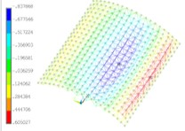

About Myself
I'm a second year graduate student from High-speed railway engineering structure seismic research institute, Central South University.
My research interest includes computer design, seismic analysis, structural engineering, and finite element (FE) simulation.
Now, my research focus on the seismic behavior of high-speed railway long-span steel truss arch bridge-track system.
I am very fortunate to be advised by Prof. Lizhong Jiang and Prof. Liqiang Jiang.
The Latest Research News [2022.09.16]

Strings and cables are arranged outside the surface of bidirectional
single-layer cylindrical reticulated shells to form a tensive-string
structural system, which effectively enhances the strength of the structure.
In this paper, the influences of the prestress, span ratio, initial defect
and cable strength on the static stability of reticulated shells with spans
of 40 m, 50 m and 60 m are analyzed. The practicability of the structural
system is demonstrated by examples of reticulated shells with spans of 100 m
and 120 m. Based on the response surface method of ANSYS and MATLAB, the
reliability of reticulated shells under the failure modes of strength
failure and deformation failure was analyzed. The failure probability,
reliability index, sensitivity and correlation were obtained.
The results show that the maximum stability strength of the
structure was increased by 744% after arranging the chords
and cables. The failure probability of the stability strength
of the 100-m-span reticulated shell is 0.1026, and its reliability
is relatively low. The stability strength and failure probability
of deformation of reticulated shells with spans less than 60 m are
very small. The strength of the cable in the reticulated shell is
the main factor affecting the stability of the structure. In long-span
reticulated shells, the influence of cables is relatively weak.
The tensile strength and the inner and outer diameters of chords
have a certain influence on the structural deformation.